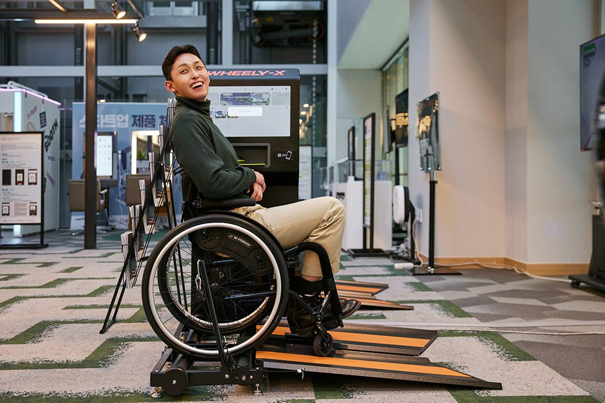
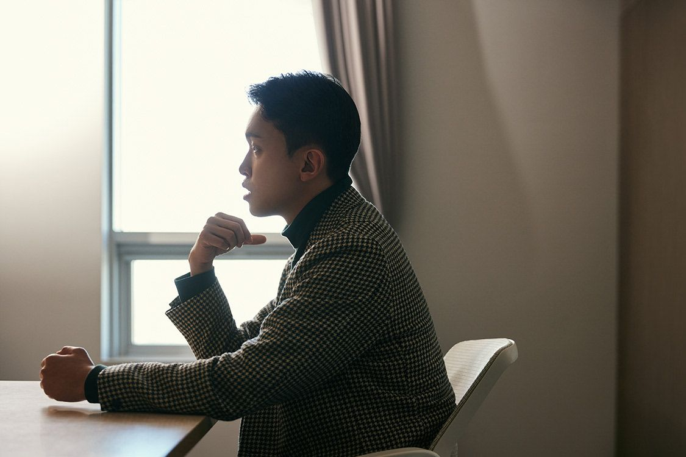

나의 이야기
긴 재활을 지나며 알게 된 것이 있습니다.
운동을 할 수 있느냐는 의지가 아니라 환경과 도구의 문제라는 것.

-
2013
미국에서 시작한 배움
미국 Central Piedmont Community College에서 국제경영을 공부했고, 아너 소사이어티 Phi Theta Kappa에서 부회장(Fellowship)을 맡았습니다.
-
미국에서
태권도 사범, 그리고 낙상
미국에서 태권도 사범으로 일하던 중 야외 시범에서 떨어져 크게 다쳤습니다. 몸을 쓰는 게 직업이던 사람이 다시 움직이기까지, 긴 재활이 필요했습니다.
-
2016
카투사 복무
미8군 카투사로 복무하며 병장을 달았습니다.
-
2017
세계를 상대로 한 영업
토도웍스에서 글로벌 세일즈를 맡아 2년 8개월간 해외 시장을 뛰었습니다. 같은 시기 한국외대에서 영어통번역을 공부했습니다.
-
어머니
같은 10만 원, 다른 운동
저는 한 달 10만 원이면 헬스장을 마음껏 다녔지만, 휠체어를 타는 어머니는 PT 한 번에 10만 원 넘게 내야 했습니다. 휠체어를 탄 사람에게 세상은 평평하지도, 안전하지도 않았습니다.
-
2020
캥스터즈 창업
똑같이 휠체어를 타는 부모님을 둔 조정흠(John Cho)과 함께 캥스터즈를 세웠습니다. 사랑하는 가족이 장벽 없이, 스스로 살아가는 삶을 누리게 하자는 것이 출발점이었습니다.

-
2021
첫 제품, 그리고 방향 전환
휠체어 바퀴 세척기 ‘휠스터 미니’를 내놓았습니다. 하지만 이동이 편해지는 것만으로는 삶의 반경이 넓어지지 않았습니다. 그래서 ‘운동’으로 방향을 틀었습니다.
-
2022
휠리엑스 출시
휠체어를 탄 채 혼자 올라가 달릴 수 있는 트레드밀. 목업만 7번 넘게 다시 만들었습니다.
-
2023–24
세계가 알아보다, 그리고 다시 배우다
에디슨 어워드 금상, CES 혁신상, TIME ‘올해의 발명품’, 파리 패럴림픽 전시. 2024년에는 KAIST 임팩트 MBA에서 다시 공부를 시작했습니다.
“운동을 통해 숨이 턱 끝까지 차는 경험, 심장이 터질 것 같은 느낌은 모두가 누릴 수 있어야 한다.”
— 김강, 유니콘팩토리 인터뷰 (2024)